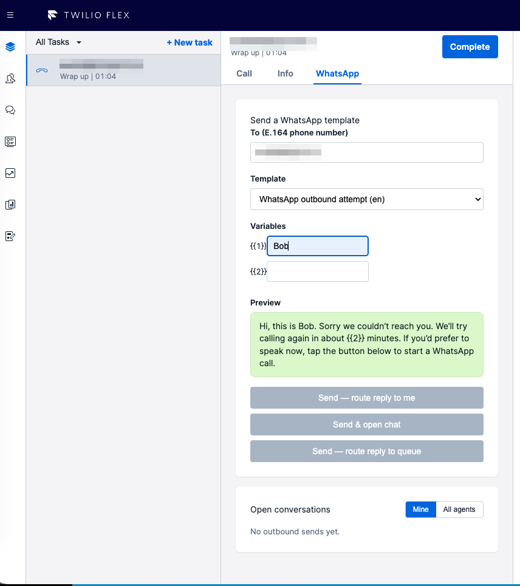
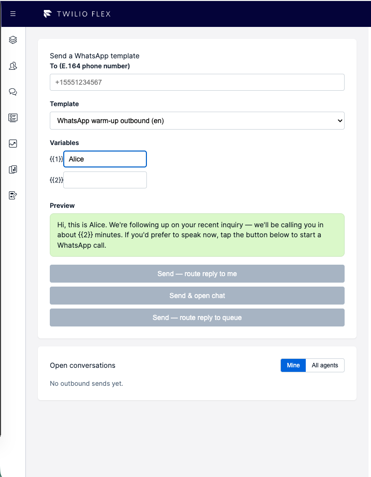
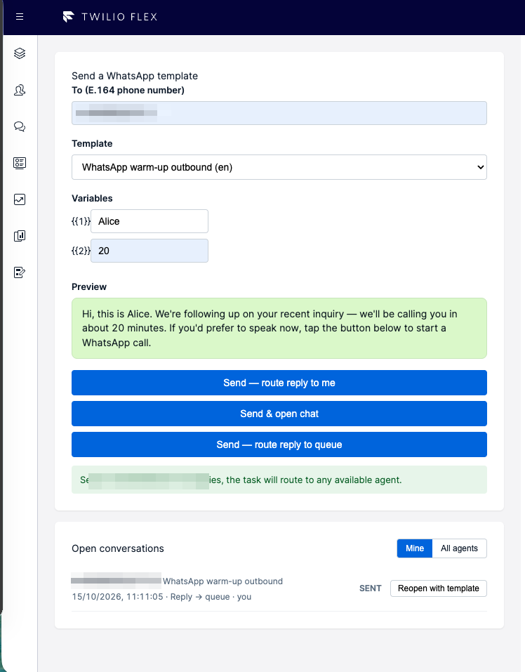
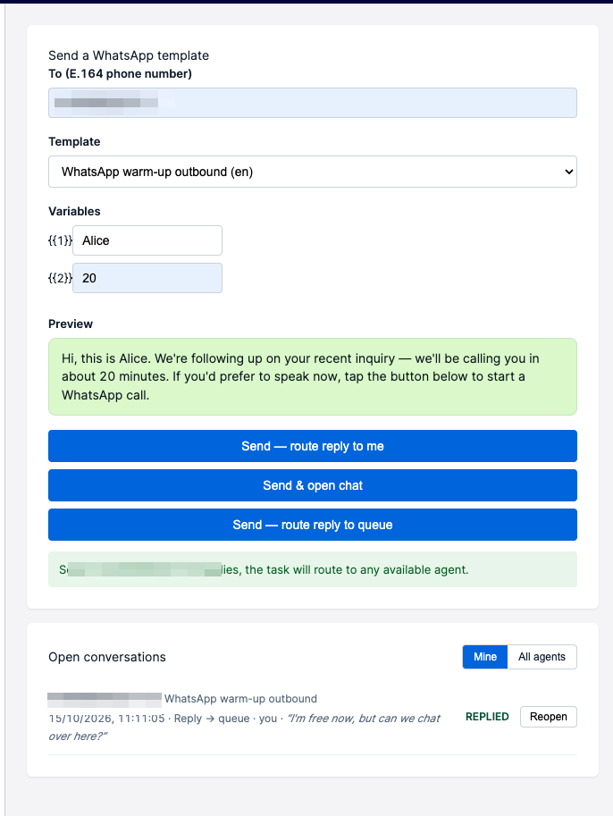
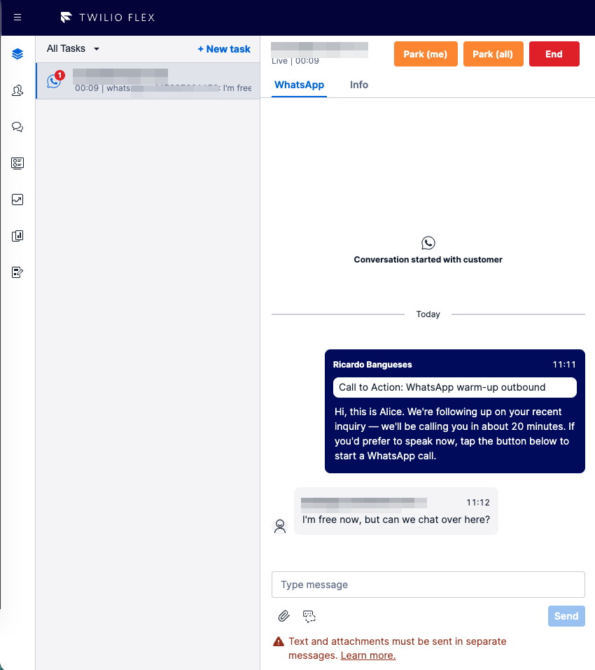

Reach Customers Who Didn't Pick Up
Agents can send a WhatsApp template directly from the active task context, with the customer's number pre-populated.
A reference architecture for giving Flex agents a first-class WhatsApp outbound workflow: pick an approved template, pre-populate recipients from the active task, choose how a reply should route, and keep every open conversation visible in a side-nav panel so no customer thread quietly disappears.
Why It Matters
Outbound WhatsApp is often an afterthought in a Flex deployment: inbound traffic works because Studio and the Interactions API handle it, but reaching a customer first — especially after a missed call — is a manual, error-prone chore. This blueprint turns that into a one-click agent action with proper governance.
Agents can send a WhatsApp template directly from the active task context, with the customer's number pre-populated.
Pick at send time whether a reply should come back to the original agent or hit the queue — enforced by the TaskRouter workflow.
A side-nav panel shows every conversation an agent currently owns, plus a toggle to see the team's open conversations.
A service pre-webhook blocks free-text sends outside the WhatsApp session window and prompts the agent to send a template to re-engage instead.
Pragmatic scope: this is a Flex-side agent workflow, not a replacement for Meta's Business Suite. The plugin handles the agent-critical moments; WhatsApp Business Platform and Twilio Conversations remain the system of record for messages and templates.
What It Does
The plugin surfaces as a dedicated side-nav tab in Flex, between Agent Desktop and Teams. Everything an agent needs to initiate, re-engage, and track outbound WhatsApp lives on that tab, with Park controls appearing on the active task canvas.
Lists approved WhatsApp templates from the Content API. Variable inputs render per template; a live preview updates as the agent types.
Send & open chat (immediate task), Send + reply to me (deferred task reserved for sender), or Send + reply to queue (deferred task, no first-refusal).
Real-time Sync-backed list of the agent's active conversations with status, last reply preview, and Reopen or Reopen-with-template actions.
Buttons on the task canvas complete the task but keep the conversation open. Agent picks reply routing policy at park time.
For conversations outside the 24h window, the plugin pre-populates the composer with the customer address and reuses the existing conversation on send.
If an agent attempts free-text outside the window, the send is blocked server-side and a toast offers to park and re-engage with a template.
A WhatsApp tab appears next to Call | Info during a live call or wrap-up. The agent can send a template mid-call (link, confirmation, next step) or follow up when the customer didn't pick up; "To" is pre-populated from the task's caller or outbound_to depending on direction.
Agent Experience
The same outbound workflow is available at the moment an agent needs it: during call wrap-up, as a standalone proactive action, from the Open conversations list, or inside an active WhatsApp task. Select any screenshot to open it at full resolution.

The WhatsApp tab remains available beside Call and Info while the voice task is wrapping up. The customer number is pre-filled, and the agent can choose a template, complete its variables, preview the result, and decide how any reply should route.

The dedicated side-nav view lets an agent proactively contact a customer without an ongoing call or wrap-up task. The agent enters an E.164 number, selects an approved business-initiated template, and chooses whether to open chat immediately or defer routing until the customer replies.

Every active outbound thread remains visible in Open conversations. When free text is not yet permitted or the 24-hour customer-service window has closed, the row offers Reopen with template so the agent can re-engage on the existing conversation rather than create a duplicate.

Once the customer replies, the row changes to Replied and displays a preview of the latest inbound message. Reopen returns the agent to the existing thread with its history intact; while the 24-hour window is open, the agent can continue using normal free-text messaging.

An active task uses the standard Flex chat experience, including the complete message history. When work needs to pause, Park (me) or Park (all) completes the current agent task while keeping the WhatsApp conversation open. The thread returns to Open conversations and can be resumed later without losing its history.
System View
The plugin lives inside the Flex Agent Desktop and surfaces four distinct UI entry points. Routing policy and WhatsApp 24-hour window enforcement run in Twilio Functions, out of the browser. Twilio Sync is the real-time surface for the Open conversations panel; adding a longer-term database is an obvious production addition (see the production checklist).
Standard Flex 2.x host. Extensible with plugins that add views, task-canvas controls, side-nav items, and notification listeners.
One plugin, four UI surfaces inside Flex:
Flex-token-gated endpoints: list templates, send-with-task, send-no-task, reopen, park, verify-active, Sync token mint.
Service pre-webhook enforces the 24h window on every outbound message; a per-conversation lifecycle webhook spawns tasks on first reply and deletes Sync rows when conversations close.
Owns messages, participants, scoped webhooks, and the WhatsApp 24h session semantics. Templates listed via v2 ContentAndApprovals.
"Main" workflow adds a Known Agent Routing filter targeting task.KnownAgentWorkerSid. The baseline filter has no fallback expression — if the original agent is offline the task stays pending (no reservation is created until the targeted worker is Available) and is cleared by TaskRouter's own task timeout. Add a fallback expression in your workflow if you need queue overflow.
Per-worker map and a shared team map; items keyed by conversation SID; real-time push to the plugin via the Sync JS SDK.
Routing Policies
Every outbound send is one of three modes. The mode is written to conversation attributes at send time and re-read by the lifecycle webhook when the customer replies, which decides how to spawn the resulting task.
Immediate chat task on the sender's desktop. Uses the Interactions API with worker_sid, so the sender gets a direct reservation. Free-text is still blocked by the 24-hour window pre-webhook until the customer replies — the agent can send further templates in the meantime, and the chat composer unlocks the moment an inbound message lands.
No task on send. On customer reply, the lifecycle webhook sets KnownAgentRoutingFlag and routes via the workflow filter back to the sender.
No task on send. On reply, a raw TaskRouter task is created without worker_sid, letting the workflow route it to any available agent in the queue.
Fallback policy is per-business: the plugin ships with a straight-forward Known Agent filter. Production deployments can extend the workflow with timeout-based fallbacks, skills, or availability expressions without touching plugin code.
Lifecycle
Parking lets an agent step away from a conversation without ending it: the Flex task is completed and the
row returns to the Open conversations panel, but the Twilio conversation stays active and the
Interaction channel stays bound. On the next customer reply (or an explicit reopen) a new task is reserved
via channels.invites.create on the existing channel — no new conversation, no history loss.
worker_sid and queue_sid — agent targeting goes
through task attributes read by the workflow filter.
Policy Guard
WhatsApp allows free-text responses only within 24 hours of the customer's last inbound message. Outside that window, only pre-approved templates are permitted. The plugin enforces this at the service pre-webhook layer so an agent cannot accidentally bill a customer-service message as a template send.
Flex calls the Conversations API. The service's pre-webhook on onMessageAdd fires before the message is persisted.
Fast-paths: non-WA, inbound, templates (ContentSid present), and non-plugin conversations pass through unmodified. For WA free-text, the webhook reads lastReplyAt from Sync.
If no reply has ever been recorded or the last reply is > 24h ago, the webhook returns HTTP 403 with a structured reason code. The message is never sent.
A notification wrapper detects any send-fail toast whose task is a WhatsApp conversation and surfaces our own prompt: Reply to me / Reply to queue.
Agent picks a routing mode; the plugin parks the current task with that mode, stashes a reopen context, and navigates to the Outbound tab with the customer address pre-filled.
Error handling is three-way, not uniformly permissive: transient Sync failures (5xx, network, auth)
let the send through so an infra blip doesn't block valid traffic; a missing SYNC_SERVICE_SID returns
a 500 so a deploy issue surfaces immediately; a missing Sync row is treated as "customer never replied" and the
send is rejected. The lifecycle webhook upserts the Sync row on 404, so a dropped send-time write is self-healing
as soon as the first delivery or reply event lands.
State Model
Each agent has a per-worker Sync Map keyed by conversation SID; a shared team map mirrors every entry for the "All agents" toggle. The plugin subscribes to the maps via the Sync JS SDK and renders a live list with status, last reply preview, and action buttons.
| Field | Set By | Purpose |
|---|---|---|
conversationSid |
send function | Row key; also echoed into the body for convenience. |
to, templateSid, templateName, sentAt, mode |
send function; to and mode can be updated on park |
Facts about the current state of the row. mode reflects the policy for the next reply (changes if an agent parks with a different routing choice); to is backfilled from the participant when a Studio-created inbound conversation is parked. |
status |
lifecycle webhook | Transitions through sent → delivered → read → replied, plus parked, failed, undelivered. |
lastReplyAt, lastReplyPreview |
lifecycle webhook (onMessageAdded) |
Powers the 24h window check and the "last message" line in the row. |
initiatingWorkerSid, initiatingWorkerName |
send function + park (owner transfer) | Current owner. Changes on park when parker is not the original sender. |
parkedAt, parkedByWorkerSid, parkedByWorkerName |
park | Audit trail. Rendered inline on parked rows. |
flexInteractionSid, flexInteractionChannelSid |
send function / lifecycle (first time) | Persisted on conversation attributes so unpark and reopen can reuse the same Interaction channel via channels.invites.create. Not written to Sync. |
Rows are deleted when the conversation closes, via onConversationStateUpdated. A reconciliation
endpoint (/verify-active) sweeps on panel mount to clean up any drift from missed webhooks.
Trade-Offs
The choices below shape how the plugin behaves across routing, lifecycle, and policy. Each card describes what the plugin does and why that decision was made.
Replies are routed via a declarative TaskRouter workflow filter that reads the sender's worker ID from task attributes. Keeps the routing policy in one place and matches TaskRouter's native model. The baseline filter has no built-in fallback — add a timeout + overflow queue in the workflow definition if your deployment needs one.
Park removes the agent from the Flex Interaction while leaving the underlying Twilio conversation active. The task is completed but the conversation stays available for a future reply or an explicit reopen, preserving history.
Reopening a parked or stale conversation adds a new agent to the existing Interaction rather than creating a new one. The customer sees one continuous conversation, and the agent lands on the full history on their desktop.
When the agent chooses "reply to queue," the resulting task is created without any specific worker reserved first. Any available agent in the queue can accept, with the conversation context carried on the task so the chat panel renders correctly on acceptance.
WhatsApp blocks free-text sends more than 24 hours after the customer's last inbound message. A Twilio-side check enforces the window on every outbound message so an agent can't accidentally violate policy, with inexpensive short-circuits for traffic the plugin doesn't own.
When the 24-hour check rejects a send, Flex shows a generic failure toast. The plugin replaces that toast with a specific prompt — "send a template to re-engage?" — so the agent gets a clear next action instead of an unexplained error.
Deployment Knobs
Every value a deployment is likely to change at install time is exposed as an environment variable.
Workflow routing rules and template content stay out of env — those live in TaskRouter and the Content
Template Builder respectively. The 24-hour window itself is configurable via WA_WINDOW_HOURS
but defaults to the standard WhatsApp Customer Service Window of 24 hours.
serverless/.env)| Variable | Default | Purpose |
|---|---|---|
AUTO_CLOSE_AFTER |
P5D |
ISO 8601 duration passed as Timers.Closed on every conversation. Resets on activity. Twilio enforces a 10-minute minimum. |
WA_WINDOW_HOURS |
24 |
Threshold the pre-webhook uses to block free-text sends. Change only if your messaging policy diverges from Meta's standard Customer Service Window. |
SYNC_TOKEN_TTL_SECONDS |
3600 |
Lifetime of Sync access tokens minted for the plugin. Short = tighter rotation; long = fewer token mints. |
TASK_CHANNEL_NAME |
chat |
TaskRouter channel used when creating chat tasks. Only change if your workspace defines a custom channel. |
plugin-whatsapp-outbound/.env, FLEX_APP_*)| Variable | Default | Purpose |
|---|---|---|
FLEX_APP_FUNCTIONS_BASE_URL |
— | URL of the deployed serverless; required. |
FLEX_APP_SIDE_NAV_LABEL |
WhatsApp Outbound |
Label shown on the Flex side-nav item. |
FLEX_APP_ENABLE_TEAM_VIEW |
true |
Expose the "All agents" toggle in the Open conversations panel. Set false for privacy-sensitive deployments. |
FLEX_APP_ENABLE_PARK |
true |
Expose Park (me) / Park (all) on the task canvas. Set false for fire-and-forget deployments; Flex's native End button stays in place. |
FLEX_APP_DEFAULT_SEND_MODE |
open-chat |
Which of the three send-mode buttons sits first in the composer. Agents can still pick any of the three per send. |
FLEX_APP_WA_WINDOW_HOURS |
24 |
UI threshold used to decide "Reopen" vs "Reopen with template" on each row. Must match the serverless WA_WINDOW_HOURS or UI and policy drift. |
Intentionally not exposed: the pre-webhook on/off switch and workflow fallback rules. Letting a deployment turn the 24h guard off invites Meta-policy violations; routing logic belongs in TaskRouter workflow filters, not plugin env vars.
Shipping It
The reference implementation is deployment-ready as a POC and demo. The items below are the realistic hardening work before using it at scale with real customer traffic.
admin / supervisor) and route queries through the backend rather
than exposing per-agent Sync maps directly.
wa_window_closed (the error body is stripped by the time it reaches the browser). Tighten
the match when Flex surfaces the richer error payload, or add a secondary fetch to confirm before
prompting.
API Surface
All plugin-facing endpoints are Flex-token-gated. /conversation-lifecycle is
.protected.js, so the Serverless runtime verifies Twilio's request signature on every
invocation. /wa-window-pre-webhook is not currently signature-validated — a production
hardening would rename it to .protected.js or add explicit signature verification in-handler.
| Endpoint | Called By | Responsibility |
|---|---|---|
/list-templates |
Plugin on tab mount | Fetches approved WhatsApp templates from the Content API (v2 ContentAndApprovals) and extracts variable keys. |
/send-outbound-template |
Plugin (Send & open chat) | Creates conversation, participant, lifecycle webhook, template message, and a Flex Interaction with worker_sid targeting the sender. |
/send-outbound-notask |
Plugin (Reply to me / Reply to queue) | Creates conversation + template; sets sendMode on conversation attrs. No task yet — the lifecycle webhook spawns it on first reply. |
/reopen-conversation |
Plugin (Reopen button) | Creates a Flex task against the existing conversation. Reuses the Interaction channel via channels.invites.create. |
/park-conversation |
Plugin (Park buttons, window-closed toast) | Closes the agent participant, updates conversation attrs with the chosen reply mode, moves the Sync row to the parker, refreshes Timers.Closed. |
/verify-active |
Plugin on panel mount | Sweeps the agent's Sync rows against Twilio and deletes any whose conversation is closed. Self-heals drift. |
/sync-token |
Plugin | Mints a short-lived Twilio Access Token with a Sync grant for the agent's identity. |
/conversation-lifecycle (protected) |
Twilio Conversations (per-conversation webhook) | On onMessageAdded from the customer: spawns task via Interactions or raw TaskRouter. On onDeliveryUpdated: patches Sync status. On onConversationStateUpdated: closed: deletes Sync rows. |
/wa-window-pre-webhook |
Twilio Conversations (service pre-webhook) | Rejects WA free-text sends outside the 24h window with HTTP 403 wa_window_closed. Fast-paths non-WA, inbound, template sends, and non-plugin conversations. |